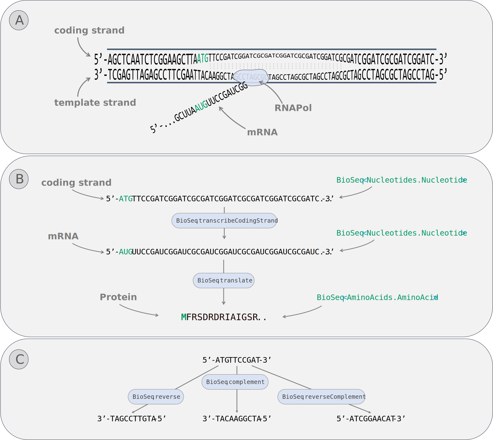

BioCollections
Summary: This example shows how to use collections of biological items in BioFSharp
Analogous to the build-in collections BioFSharp provides BioSeq, BioList and BioArray for individual collection specific optimized operations.
The easiest way to create them are the ofBioItemString -functions
open BioFSharp
let s1 = "PEPTIDE" |> BioSeq.ofAminoAcidString
let s2 = "PEPTIDE" |> BioList.ofAminoAcidString
let s3 = "TAGCAT" |> BioArray.ofNucleotideString
s1, s2, s3
(Microsoft.FSharp.Collections.IEnumerator+mkSeq@177[BioFSharp.AminoAcids+AminoAcid], [Pro; Glu; Pro; ... ], BioFSharp.Nucleotides+Nucleotide[])Item1
1 PEPTIDE
Item2
1 PEPTIDE
Item3
1 TAGCAT
Nucleotides

Figure 1: Selection of covered nucleotide operations (A) Biological principle. (B) Workflow with BioSeq. (C) Other covered functionalities.
Let's imagine you have a given gene sequence and want to find out what the according protein might look like.
let myGene = BioArray.ofNucleotideString "ATGGCTAGATCGATCGATCGGCTAACGTAA"
myGene
1 ATGGCTAGAT CGATCGATCG GCTAACGTAA
Yikes! Unfortunately we got the 5'-3' coding strand. For proper transcription we should get the complementary strand first:
let myProperGene = BioArray.complement myGene
myProperGene
1 TACCGATCTA GCTAGCTAGC CGATTGCATT
Now let's transcribe and translate it:
let myTranslatedGene =
myProperGene
|> BioArray.transcribeTemplateStrand
|> BioArray.translate 0
myTranslatedGene
1 MARSIDRLT*
Of course, if your input sequence originates from the coding strand, you can directly transcribe it to mRNA since the only difference between the coding strand and the mRNA is the replacement of 'T' by 'U' (Figure 1B)
let myTranslatedGeneFromCodingStrand =
myGene
|> BioArray.transcribeCodingStrand
|> BioArray.translate 0
myTranslatedGeneFromCodingStrand
1 MARSIDRLT*
Other Nucleotide conversion operations are also covered:
let mySmallGene = BioSeq.ofNucleotideString "ATGTTCCGAT"
mySmallGene
1 ATGTTCCGAT
BioSeq.reverse mySmallGene
1 TAGCCTTGTA
BioSeq.complement mySmallGene
1 TACAAGGCTA
BioSeq.reverseComplement mySmallGene
1 ATCGGAACAT
AminoAcids
Basics
Some functions which might be needed regularly are defined to work with nucleotides and amino acids:
let myPeptide = "PEPTIDE" |> BioSeq.ofAminoAcidString
myPeptide
1 PEPTIDE
myPeptide
|> BioSeq.toFormula
|> Formula.toString
|
BioSeq.toAverageMass myPeptide
781.8103169999999
Digestion
BioFSharp also comes equipped with a set of tools aimed at cutting apart amino acid sequences. To demonstrate the usage, we'll throw some trypsin at the small RuBisCO subunit of Arabidopos thaliana:
In the first step, we define our input sequence and the protease we want to use.
let RBCS =
"""MASSMLSSATMVASPAQATMVAPFNGLKSSAAFPATRKANNDITSITSNGGRVNCMQVWP
PIGKKKFETLSYLPDLTDSELAKEVDYLIRNKWIPCVEFELEHGFVYREHGNSPGYYDGR
YWTMWKLPLFGCTDSAQVLKEVEECKKEYPNAFIRIIGFDNTRQVQCISFIAYKPPSFT"""
|> BioArray.ofAminoAcidString
RBCS
1 MASSMLSSAT MVASPAQATM VAPFNGLKSS AAFPATRKAN NDITSITSNG GRVNCMQVWP
61 PIGKKKFETL SYLPDLTDSE LAKEVDYLIR NKWIPCVEFE LEHGFVYREH GNSPGYYDGR
121 YWTMWKLPLF GCTDSAQVLK EVEECKKEYP NAFIRIIGFD NTRQVQCISF IAYKPPSFT
let trypsin = Digestion.Table.getProteaseBy "Trypsin"
let digestedRBCS = Digestion.BioArray.digest trypsin 0 RBCS
digestedRBCS
|> Seq.head
{ ProteinID = 0\n MissCleavages = 0\n CleavageStart = 0\n CleavageEnd = 27\n PepSequence =\n [Met; Ala; Ser; Ser; Met; Leu; Ser; Ser; Ala; Thr; Met; Val; Ala; Ser; Pro;\n Ala; Gln; Ala; Thr; Met; Val; Ala; Pro; Phe; Asn; Gly; Leu; Lys] }ProteinID 0
MissCleavages 0
CleavageStart 0
CleavageEnd 27
PepSequence
1 MASSMLSSAT MVASPAQATM VAPFNGLK
In reality, proteases don't always completely cut the protein down. Instead, some sites stay intact and should be considered for in silico analysis.
This can easily be done with the concernMissCleavages function. It takes the minimum and maximum amount of misscleavages you want to have and also the digested protein. As a result you get all possible combinations arising from this information.
let digestedRBCS' = Digestion.BioArray.concernMissCleavages 0 2 digestedRBCS
digestedRBCS
|> Seq.item 1
{ ProteinID = 0\n MissCleavages = 0\n CleavageStart = 28\n CleavageEnd = 36\n PepSequence = [Ser; Ser; Ala; Ala; Phe; Pro; Ala; Thr; Arg] }ProteinID 0
MissCleavages 0
CleavageStart 28
CleavageEnd 36
PepSequence
1 SSAAFPATR